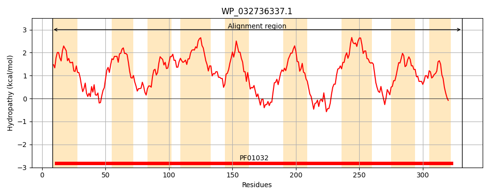
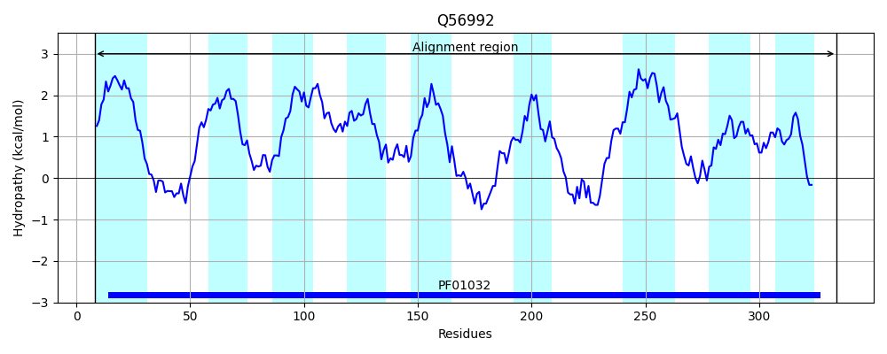
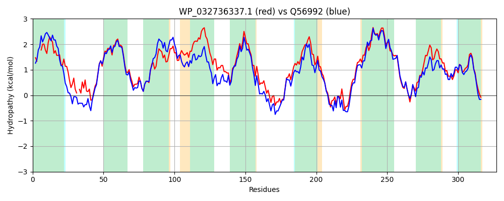

Hit Accession: Q56992
Hit TCID: 3.A.1.14.5
Hit Description: gnl|BL_ORD_ID|14155 gnl|TC-DB|Q56992|3.A.1.14.5 Hemin transport system permease protein hmuU - Yersinia pestis.
Mach Len: 327
e:0.000000
Query TMS Count : 9
Hit TMS Count: 9
TMS-Overlap Score: 7.850000
Predicted Substrates:CHEBI:5651;ferroheme b
BLAST Alignment:
Score: 1016 , Bit scores: 395 bits, E-value: 1.1e-138, Alignment length: 327, Percentage identity: 64
Query: 8 RLLL--MMLLLVSLTLFATTLGAMRLPLVNLL-PSGDEMLRHIWLSIRLPRVLLALLVGAALALSGCVMQGLFRNPLADPGLLGISSGAALAVASWLVLPFSATGLIALYMPMLAAFIGSLAVMVVIFILSRAEEGSLSRLLLVGIAINALCGALVGVLSWLSNDAQLRQLSLWGMGSLGQAEWPTLLVVATLIIPAALAVWWMASRLNLLQLGDEEAHYLGVNVQALQRWLLLCSAVLVAAAVAISGVIGFIGLVVPHLMRLWLGPDHRGLIPGSLLAGAILLLLADTLARTVAAPAEMPVGLLTSLLGAPWFLWLVFRRENSRHG 331
RL+L +++LLV L L + +GA+ L L S ++ + HIWL+IRLPRVLLA++VG ALA+SG +MQGLFRNPLADPGLLGISSGAAL V +V+PFS L+ALY M+ AFIGSLA+ +IF LSR G+L+RLLL GIAINALCGA VGVL+++S+D QLRQ SLW MGSLGQA+W TLLV ++LI+P + A +LNLLQLGDEEAHYLGVNV+ + LLL SA+L+ AAVA+SGVIGFIGLVVPHL+R+ +G DHR L+PG+ L GA LLL ADTLART+ APAEMPVGLLTSLLG P+FLWL+ R+ R G
Sbjct: 8 RLMLGFLLILLVILALGSANMGALSLSFRTLWNTSTNDAMWHIWLNIRLPRVLLAVVVGCALAVSGTIMQGLFRNPLADPGLLGISSGAALCVGLIIVMPFSLPPLLALYSHMVGAFIGSLAISTIIFTLSRWGHGNLARLLLAGIAINALCGAAVGVLTYISDDQQLRQFSLWSMGSLGQAQWSTLLVASSLILPTCILGLLQARQLNLLQLGDEEAHYLGVNVRQAKLRLLLLSAILIGAAVAVSGVIGFIGLVVPHLIRMRIGADHRWLLPGAALGGACLLLTADTLARTLVAPAEMPVGLLTSLLGGPYFLWLILRQREQRSG 334 | Protein Hydropathy Plots: |
|---|
|  |  |
Pairwise Alignment-Hydropathy Plot:
|
|---|
|  |